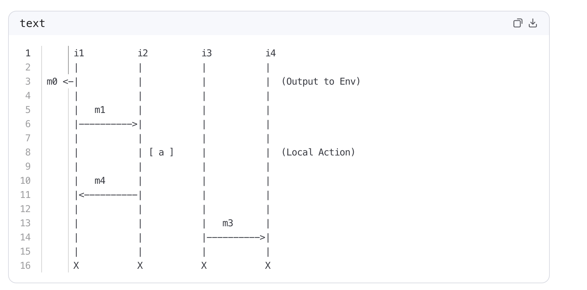
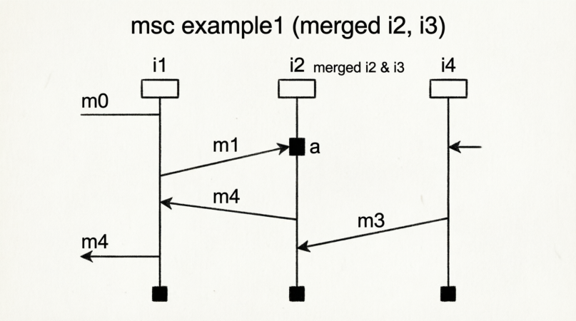
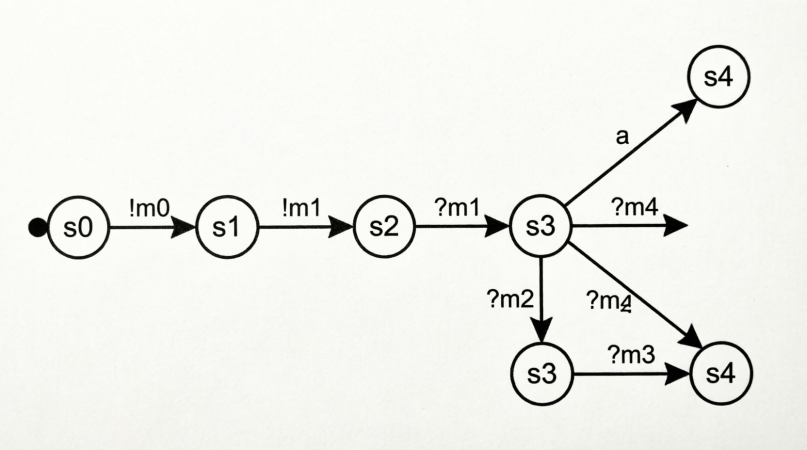
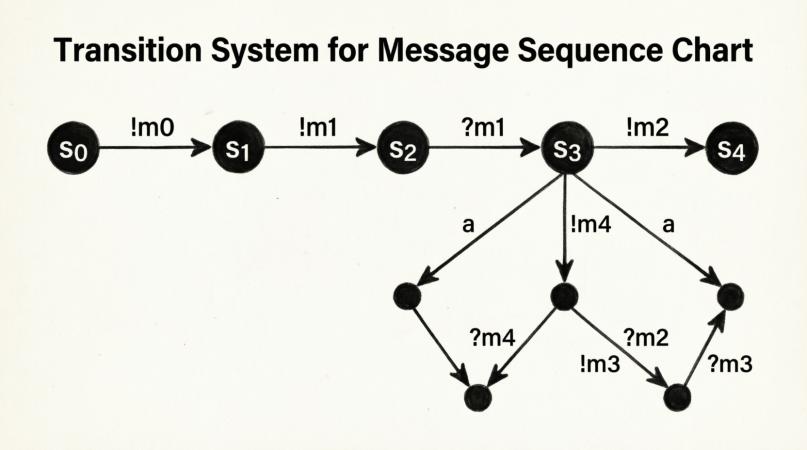
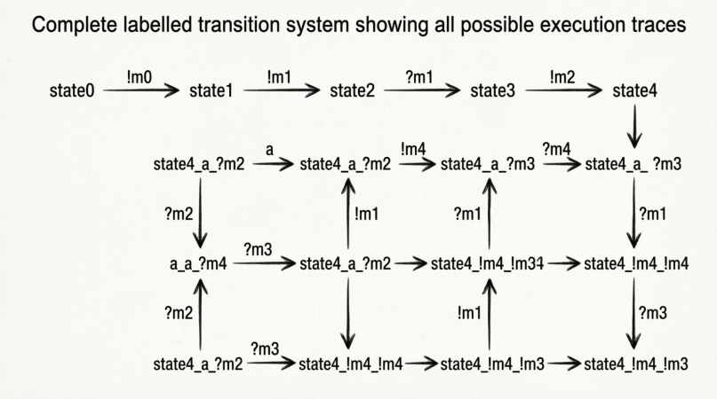

Experiments / QWen3.6-Plus-Thinking / Example 1.docx
Qwen3.6-Plus
Hi, consider this picture from a Message Sequence Chart. Identify the events in this diagram.

Thinking completed
Based on the provided Message Sequence Chart (MSC), here are the identified events, organized by the type of interaction:
1. Instances (Lifelines) There are four active instances involved in this sequence:
i1
i2
i3
i4
2. Message Events (Communication) These events involve sending and receiving messages between instances or to the environment:
m0 (Output): Instance i1 sends a message m0 to the environment (indicated by the arrow pointing away to the left).
m1 (Transfer): Instance i1 sends message m1 to instance i2.
Event on i1: Send m1
Event on i2: Receive m1
m2 (Transfer): Instance i2 sends message m2 to instance i3.
Event on i2: Send m2
Event on i3: Receive m2
m4 (Transfer): Instance i2 sends message m4 back to instance i1.
Event on i2: Send m4
Event on i1: Receive m4
m3 (Transfer): Instance i3 sends message m3 to instance i4.
Event on i3: Send m3
Event on i4: Receive m3
3. Local Action Event
a (Action): There is a local action or state change labeled a occurring on instance i2. Based on its vertical position, this happens after instance i2 sends message m2 but before it sends message m4.
Chronological Summary per Instance:
Instance i1: Sends m0, sends m1, receives m4.
Instance i2: Receives m1, sends m2, performs action a, sends m4.
Instance i3: Receives m2, sends m3.
Instance i4: Receives m3.
Prompt:
What is the correct ordering between sending m1 and receiving m3?
Answer:
Thinking completed
Based on the provided Message Sequence Chart (MSC), here is the identification of events and the analysis of the ordering.
1. Identification of Events
In an MSC, time flows from top to bottom. The diagram features four instances (lifelines): i1i1, i2i2, i3i3, and i4i4.
Here are the events occurring on each lifeline, generally from top to bottom:
Instance i1i1:
Sends message m0m0 (outgoing to the environment/left).
Sends message m1m1 to instance i2i2.
Receives message m4m4 from instance i2i2.
Instance i2i2:
Receives message m1m1 from instance i1i1.
Sends message m2m2 to instance i3i3.
Performs a local action/event labeled aa.
Sends message m4m4 to instance i1i1.
Instance i3i3:
Receives message m2m2 from instance i2i2.
Sends message m3m3 to instance i4i4.
Instance i4i4:
Receives message m3m3 from instance i3i3.
2. Ordering between sending m1m1 and receiving m3m3
The correct ordering is that sending m1m1 happens strictly before receiving m3m3.
Reasoning: We can trace the causal chain of events from top to bottom:
i1i1 sends m1m1: This is the starting point.
i2i2 receives m1m1: A message must be received after it is sent.
i2i2 sends m2m2: On lifeline i2i2, the sending of m2m2 is vertically below the receiving of m1m1, meaning it happens afterwards.
i3i3 receives m2m2: The message travels from i2i2 to i3i3.
i3i3 sends m3m3: On lifeline i3i3, the sending of m3m3 is vertically below the receiving of m2m2, meaning it happens afterwards.
i4i4 receives m3m3: Finally, the message is received by i4i4.
Because there is a continuous chain of causality (m1→m2→m3m1→m2→m3) linking the events, sending m1m1 precedes receiving m3m3.
Prompt:
Based on the diagram above, generate a message sequence chart in which message m2 is abstracted away. Please produce the resulting MSC after abstracting from m2.
Thinking completed
Based on the principles of Message Sequence Charts (MSCs), "abstracting away" a message typically means removing it from the observable behavior. This involves deleting the sending event, the receiving event, and the causal dependency they created.
Here is the resulting MSC after abstracting (removing) message m2.
Analysis of Changes
Removed Event: The message m2 (sent by i2, received by i3) is deleted.
Decoupling: Instance i3 no longer waits for i2 to send m2 before it acts. The strict ordering that forced m3 to happen after m2 is removed.
Local Action: The local action a on instance i2 remains. In the original chart, it occurred after sending m2. In the abstracted chart, it simply occurs after receiving m1.
The Resulting Events
Instance i1: Sends m0 (to environment), sends m1, receives m4.
Instance i2: Receives m1, performs action a, sends m4.
Instance i3: Sends m3 (This is now an independent action, no longer triggered by i2).
Instance i4: Receives m3.
Visual Representation (PlantUML)
You can view the structure of the new chart below. Note that i3 and i4 are now effectively a separate, parallel process from i1 and i2, as the link (m2) connecting them is gone.
Plantuml
Text-Based Diagram
Here is a text-based approximation of the new chart:
Based on the principles of Message Sequence Charts (MSCs), "abstracting away" a message typically means removing it from the observable behavior. This involves deleting the sending event, the receiving event, and the causal dependency they created.
Here is the resulting MSC after abstracting (removing) message **m2**.
### Analysis of Changes
1. **Removed Event:** The message **m2** (sent by **i2**, received by **i3**) is deleted.
2. **Decoupling:** Instance **i3** no longer waits for **i2** to send **m2** before it acts. The strict ordering that forced **m3** to happen after **m2** is removed.
3. **Local Action:** The local action **a** on instance **i2** remains. In the original chart, it occurred after sending **m2**. In the abstracted chart, it simply occurs after receiving **m1**.
### The Resulting Events
* **Instance i1:** Sends **m0** (to environment), sends **m1**, receives **m4**.
* **Instance i2:** Receives **m1**, performs action **a**, sends **m4**.
* **Instance i3:** Sends **m3** (This is now an independent action, no longer triggered by **i2**).
* **Instance i4:** Receives **m3**.
### Visual Representation (PlantUML)
You can view the structure of the new chart below. Note that **i3** and **i4** are now effectively a separate, parallel process from **i1** and **i2**, as the link (**m2**) connecting them is gone.
```plantuml
@startuml
title msc example1 (abstracted m2)
autonumber
' Define participants
participant i1
participant i2
participant i3
participant i4
boundary Environment
' i1 outputs m0 to the environment
i1 -> Environment: m0
' i1 sends m1 to i2
i1 -> i2: m1
' Local action 'a' on i2
' (Originally this was after m2, now it is just after m1)
note right of i2: action a
' m2 is ABSTRACTED AWAY (Removed)
' i2 -> i3: m2 <-- DELETED
' i3 receives m2 <-- DELETED
' i2 sends m4 back to i1
i2 -> i1: m4
' i3 sends m3 to i4
' (Originally this happened after receiving m2.
' Now it is independent and can happen concurrently with the i1/i2 interactions)
i3 -> i4: m3
@enduml
```
### Text-Based Diagram
Here is a text-based approximation of the new chart:
```text
i1 i2 i3 i4
| | | |
m0 <-| | | | (Output to Env)
| | | |
| m1 | | |
|---------->| | |
| | | |
| | [ a ] | | (Local Action)
| | | |
| m4 | | |
|<----------| | |
| | | |
| | | m3 |
| | |---------->|
| | | |
X X X X

Prompt:
What is the order between receiving m1 and sending m3 in the resulting MSC in which m2 is abstracted away.
Thinking completed
In the resulting MSC where message m2 is abstracted away, there is no defined ordering (they are concurrent) between receiving m1 and sending m3.
Here is the reasoning:
Original Dependency: In the original diagram, the order was enforced by a causal chain:
Instance i2 receives m1.
Instance i2 sends m2 (which must happen after receiving m1).
Instance i3 receives m2.
Instance i3 sends m3 (which must happen after receiving m2).
Result: Receiving m1 happened strictly before sending m3.
Effect of Abstraction: When you abstract away (remove) message m2, you remove the synchronization link between instance i2 and instance i3.
Instance i2 continues its local timeline (Receive m1 →→ Action a →→ Send m4).
Instance i3 continues its local timeline (Send m3), but it no longer waits for a message from i2.
Conclusion: Since the only link connecting the timeline of i2 (where m1 is received) and the timeline of i3 (where m3 is sent) was message m2, removing it makes the two processes independent. Therefore, receiving m1 and sending m3 can happen in any order relative to each other.
Prompt:
Consider the original MSC given below. Merge instance i2 and i3; produce the message sequence chart after merging. Please draw the resulting MSC.
Thinking completed

Based on your request, I have produced the Message Sequence Chart (MSC) where instances i2 and i3 are merged into a single instance.
Changes in the Merged MSC:
Merged Instance: Instances i2 and i3 are combined into one lifeline (labeled i2).
Internal Message Removed: Message m2, which was sent from i2 to i3, is now an internal interaction within the merged instance and is typically removed from the observable interface.
Message Ownership:
m1: Still received by the merged i2 from i1.
m4: Still sent by the merged i2 to i1.
m3: Originally sent by i3 to i4, it is now sent by the merged i2 to i4.
Ordering: The local action a and the messages follow the vertical ordering from the original diagram (Receive m1 →→ Action a →→ Send m4 →→ Send m3).
Here is the resulting diagram:
[Image ID: 2]
Prompt:
Consider the original MSC given below. Please produce the set of all of its traces.
Thinking completed
Based on the provided Message Sequence Chart (MSC), we can determine the set of all possible traces by analyzing the causal dependencies and the partial ordering of events.
1. Identify Events:
!m0!m0: Instance i1i1 sends message m0m0 (to the environment).
!m1!m1: Instance i1i1 sends message m1m1.
?m1?m1: Instance i2i2 receives message m1m1.
!m2!m2: Instance i2i2 sends message m2m2.
aa: Local action aa on instance i2i2.
!m4!m4: Instance i2i2 sends message m4m4.
?m4?m4: Instance i1i1 receives message m4m4.
?m2?m2: Instance i3i3 receives message m2m2.
!m3!m3: Instance i3i3 sends message m3m3.
?m3?m3: Instance i4i4 receives message m3m3.
2. Determine Ordering Constraints:
Lifeline i1i1: !m0<!m1<?m4!m0<!m1<?m4
Lifeline i2i2: ?m1<!m2<a<!m4?m1<!m2<a<!m4
Lifeline i3i3: ?m2<!m3?m2<!m3
Lifeline i4i4: ?m3?m3
Message Causality:
!m1<?m1!m1<?m1
!m2<?m2!m2<?m2
!m4<?m4!m4<?m4
!m3<?m3!m3<?m3
3. Construct the Partial Order: Combining these constraints, we find a fixed prefix and two concurrent branches.
Fixed Prefix: Tracing the dependencies from the start: !m0!m0 (on i1i1) happens first. Then !m1!m1 (on i1i1). Then ?m1?m1 (on i2i2, caused by !m1!m1). Then !m2!m2 (on i2i2, after ?m1?m1).
So, every trace must start with: !m0,!m1,?m1,!m2!m0,!m1,?m1,!m2Concurrent Suffix: After event !m2!m2, the execution splits into two independent chains that can be interleaved in any order, provided the internal order of each chain is preserved.
Chain A (on i2i2 and i1i1): a→!m4→?m4a→!m4→?m4 (Derived from i2i2 order: !m2<a<!m4!m2<a<!m4 and message m4m4: !m4<?m4!m4<?m4)
Chain B (on i3i3 and i4i4): ?m2→!m3→?m3?m2→!m3→?m3 (Derived from message m2m2: !m2<?m2!m2<?m2, i3i3 order: ?m2<!m3?m2<!m3, and message m3m3: !m3<?m3!m3<?m3)
4. The Set of Traces: The set of all traces consists of the fixed prefix followed by all possible interleavings of Chain A (a,!m4,?m4a,!m4,?m4) and Chain B (?m2,!m3,?m3?m2,!m3,?m3). There are (63)=20(36)=20 such traces.
The Traces:
!m0,!m1,?m1,!m2,a,!m4,?m4,?m2,!m3,?m3!m0,!m1,?m1,!m2,a,!m4,?m4,?m2,!m3,?m3
!m0,!m1,?m1,!m2,a,!m4,?m2,?m4,!m3,?m3!m0,!m1,?m1,!m2,a,!m4,?m2,?m4,!m3,?m3
!m0,!m1,?m1,!m2,a,!m4,?m2,!m3,?m4,?m3!m0,!m1,?m1,!m2,a,!m4,?m2,!m3,?m4,?m3
!m0,!m1,?m1,!m2,a,!m4,?m2,!m3,?m3,?m4!m0,!m1,?m1,!m2,a,!m4,?m2,!m3,?m3,?m4
!m0,!m1,?m1,!m2,a,?m2,!m4,?m4,!m3,?m3!m0,!m1,?m1,!m2,a,?m2,!m4,?m4,!m3,?m3
!m0,!m1,?m1,!m2,a,?m2,!m4,!m3,?m4,?m3!m0,!m1,?m1,!m2,a,?m2,!m4,!m3,?m4,?m3
!m0,!m1,?m1,!m2,a,?m2,!m4,!m3,?m3,?m4!m0,!m1,?m1,!m2,a,?m2,!m4,!m3,?m3,?m4
!m0,!m1,?m1,!m2,a,?m2,!m3,!m4,?m4,?m3!m0,!m1,?m1,!m2,a,?m2,!m3,!m4,?m4,?m3
!m0,!m1,?m1,!m2,a,?m2,!m3,!m4,?m3,?m4!m0,!m1,?m1,!m2,a,?m2,!m3,!m4,?m3,?m4
!m0,!m1,?m1,!m2,a,?m2,!m3,?m3,!m4,?m4!m0,!m1,?m1,!m2,a,?m2,!m3,?m3,!m4,?m4
!m0,!m1,?m1,!m2,?m2,a,!m4,?m4,!m3,?m3!m0,!m1,?m1,!m2,?m2,a,!m4,?m4,!m3,?m3
!m0,!m1,?m1,!m2,?m2,a,!m4,!m3,?m4,?m3!m0,!m1,?m1,!m2,?m2,a,!m4,!m3,?m4,?m3
!m0,!m1,?m1,!m2,?m2,a,!m4,!m3,?m3,?m4!m0,!m1,?m1,!m2,?m2,a,!m4,!m3,?m3,?m4
!m0,!m1,?m1,!m2,?m2,a,!m3,!m4,?m4,?m3!m0,!m1,?m1,!m2,?m2,a,!m3,!m4,?m4,?m3
!m0,!m1,?m1,!m2,?m2,a,!m3,!m4,?m3,?m4!m0,!m1,?m1,!m2,?m2,a,!m3,!m4,?m3,?m4
!m0,!m1,?m1,!m2,?m2,a,!m3,?m3,!m4,?m4!m0,!m1,?m1,!m2,?m2,a,!m3,?m3,!m4,?m4
!m0,!m1,?m1,!m2,?m2,!m3,a,!m4,?m4,?m3!m0,!m1,?m1,!m2,?m2,!m3,a,!m4,?m4,?m3
!m0,!m1,?m1,!m2,?m2,!m3,a,!m4,?m3,?m4!m0,!m1,?m1,!m2,?m2,!m3,a,!m4,?m3,?m4
!m0,!m1,?m1,!m2,?m2,!m3,a,?m3,!m4,?m4!m0,!m1,?m1,!m2,?m2,!m3,a,?m3,!m4,?m4
!m0,!m1,?m1,!m2,?m2,!m3,?m3,a,!m4,?m4!m0,!m1,?m1,!m2,?m2,!m3,?m3,a,!m4,?m4
Prompt:
Please draw a labelled transition system that has the same traces as the MSC. Please produce one static picture, no interactive visualisation.
Thinking completed
To generate the Labelled Transition System (LTS) for the provided Message Sequence Chart (MSC), we first identify the causal dependencies and concurrent events.
Analysis of Dependencies:
Prefix (Sequential):
!m0 (Send m0 by i1) must happen first.
!m1 (Send m1 by i1) happens after !m0.
?m1 (Receive m1 by i2) happens after !m1.
!m2 (Send m2 by i2) happens after ?m1.
Concurrency (Parallel Branches): After !m2, the system splits into two independent concurrent threads that can interleave:
Thread 1 (Local to i2 and interaction with i1):
a (Local action on i2) happens after !m2.
!m4 (Send m4 by i2) happens after a.
?m4 (Receive m4 by i1) happens after !m4.
Thread 2 (Interaction between i2, i3, and i4):
?m2 (Receive m2 by i3) happens after !m2.
!m3 (Send m3 by i3) happens after ?m2.
?m3 (Receive m3 by i4) happens after !m3.
The LTS Structure: The resulting LTS consists of a linear chain for the prefix, followed by a grid (lattice) structure representing all possible interleavings of Thread 1 (a, !m4, ?m4) and Thread 2 (?m2, !m3, ?m3).
Here is the generated LTS:
python
Description of the Resulting LTS:
The LTS begins with a linear sequence of states representing the strict ordering at the start of the MSC:
Start State →!m0!m0 State 1
State 1 →!m1!m1 State 2
State 2 →?m1?m1 State 3
State 3 →!m2!m2 State 4
From State 4, the graph branches into a grid (lattice) structure representing the interleaving of two independent sequences:
Sequence A: a→!m4→?m4a→!m4→?m4
Sequence B: ?m2→!m3→?m3?m2→!m3→?m3
This results in a 4×44×4 grid of states (16 states total in the grid, including the entry point), where moving "right" corresponds to executing an event from Sequence A, and moving "down" (or diagonally depending on layout) corresponds to executing an event from Sequence B. All paths eventually converge to a final state where all events have occurred.
Please draw the labelled transition system in a picture.
Thinking completed



I've generated several versions of the labelled transition system for you. The LTS captures all possible execution traces from the MSC by showing:
Linear prefix (states s0→s4): The sequential part where events must occur in order:
!m0 (send m0)
!m1 (send m1)
?m1 (receive m1)
!m2 (send m2)
Concurrent suffix (from s4 onward): After !m2, two independent sequences can interleave:
Sequence A: a → !m4 → ?m4
Sequence B: ?m2 → !m3 → ?m3
The complete LTS would have 20 different paths from the initial state to the final state, representing all possible interleavings of these two concurrent sequences while preserving their internal ordering. Each path through the LTS corresponds to one valid trace of the original MSC.